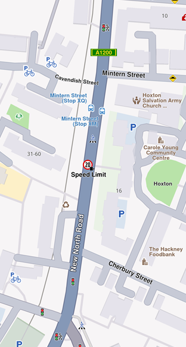
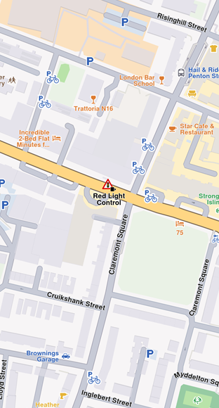
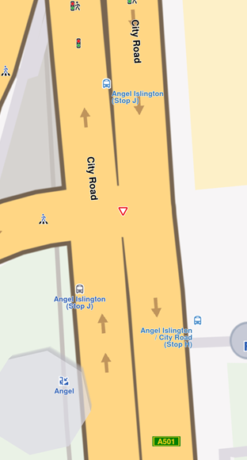
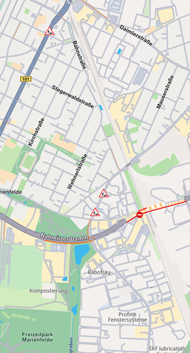
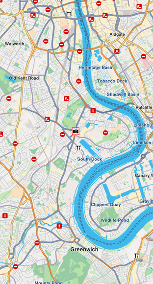

Overlays¶
An Overlay is an additional map layer in your Virtual Private Map (VPM) accessible in online and offline modes. Overlays can be default or user-defined.
Overlay data can be POI data, categories, and binary information added via GeoJSON format, using the UNL Studio. Overlays can have multiple categories and subcategories. A single item from an overlay is an overlay item.
🚨 Alert: Overlays require downloading to work offline. See Downloading overlays for details. Most overlay features require a GemMap widget with a style containing the overlay.
OverlayInfo¶
The OverlayInfo class contains information about an overlay.
Structure¶
| Method | Description | Type |
|---|---|---|
uid |
Gets the unique ID of the overlay. | int |
categories |
Gets the categories of the overlay. | List<OverlayCategory> |
getCategory |
Gets a category by its ID. | OverlayCategory? |
img |
Gets the image of the overlay. | Img |
name |
Gets the name of the overlay. | String |
hasCategories |
Checks if the category has subcategories. | bool |
Usage¶
Use OverlayInfo to:
- Access categories within an overlay
- Get the overlay
uidfor filtering search results - Toggle overlay visibility on the map
- Display overlay information in the UI
OverlayCategory¶
The OverlayCategory class represents hierarchical data for overlay categories.
Structure¶
| Property / Method | Description | Type |
|---|---|---|
uid |
The category ID. | int |
overlayuid |
The parent overlay ID. Refers to the id of the OverlayInfo object | int |
img |
The category icon. | Img |
name |
The category name. | String |
subcategories |
The subcategories of the category. | List<OverlayCategory> |
hasSubcategories |
Checks if the category has subcategories. | bool |
Usage¶
Use the category uid to:
- Filter search results
- Filter and manage overlay items that trigger alerts in AlarmService
OverlayItem¶
An OverlayItem represents a single item within an overlay, containing information about the item and its parent overlay.
Structure¶
| Property / Method | Description | Type |
|---|---|---|
categoryId |
Gets the OverlayItem's category ID. May be 0 if the item does not belong to a specific category. Gives the id of the root category which may not be the direct parent category. | int |
coordinates |
Gets the coordinates of the OverlayItem. | Coordinates |
hasPreviewExtendedData |
Checks if the OverlayItem has preview extended data (dynamic data). Available only for overlays predefined. | bool |
img |
Gets the image of the OverlayItem. | Img |
name |
Gets the name of the OverlayItem. | String |
uid |
Gets the unique ID of the OverlayItem within the overlay. | int |
overlayInfo |
Gets the parent OverlayInfo. | OverlayInfo |
previewDataParameterList |
Gets the OverlayItem preview data as a parameters list. It | SearchableParameterList |
previewData |
Gets the OverlayItem preview data as a OverlayItemParameters subclass. Contains the data provided by previewDataParameterList in a structured form. Returns null if no preview data is available or if the parent overlay is based on user-defined data | OverlayItemParameters? |
previewUrl |
Gets the preview URL for the item (if any). | String |
overlayUid |
Gets the parent overlay UID. | int |
getPreviewExtendedData |
Asynchronously gets the OverlayItem preview extended data. | ProgressListener |
cancelGetPreviewExtendedData |
Cancels the asynchronous getPreviewExtendedData operation. | void |
🚨 Alert: Don't confuse the
uidofOverlayInfo,OverlayCategory, andOverlayItem—each serves a distinct purpose.💡 Tip: Check if an
OverlayItembelongs to anOverlayInfousing the overlayUid property, or retrieve the fullOverlayInfoobject via theoverlayInfoproperty.💡 Tip: The
categoryIdgetter returns the root category ID, not necessarily the direct parent category.Get the direct parent category:
Use thefinal int parentCategoryId = overlayItem.previewDataParameterList.findParameter('icon').value as int;getCategorymethod from the parentOverlayInfoclass to retrieve the correspondingOverlayCategoryobject.
Usage¶
Select OverlayItems from the map or receive them from AlarmService on approach. Display overlay item fields and information in the UI.
Overlay Types¶
Predefined overlay types:
- Safety overlay
- Public transport overlay
- Social reports overlay
The CommonOverlayId enum contains IDs for predefined overlay categories. Each overlay type has a specific OverlayItemParameters subclass for structured preview data available on the previewData property of OverlayItem:
OverlayItemParametersis the base class for all preview data types.SocialReportParametersfor social reports overlay items.PublicTransportParametersfor public transport overlay items.SafetyParametersfor safety overlay items. ThepreviewDataParameterListcontains all the fields in a generic list format, including support for user-defined overlays.
Safety Overlay¶
Safety overlays represent speed limit cameras, red light controls, and similar items.

Speed limit overlay item

Red light control overlay item
Speed limit previewData includes:
| Field | Type | Description |
|---|---|---|
id |
int? |
The unique identifier of the overlay item. |
createStampUtc |
DateTime? |
Creation timestamp in UTC. |
iconId |
int? |
Overlay item category id. |
country |
String? |
Country ISO3 code. |
angleIcon |
int? |
Angle used to calculate icon rotation. |
cameraTypeId |
int? |
Icon camera type identifier. |
strCameraStatus |
String? |
Camera status (e.g., Active, Inactive). |
strDrivingDirection |
String? |
Driving direction text (e.g., Both Ways). |
strLocation |
String? |
Street address or location text. |
strTowards |
int? |
Angle used to calculate icon rotation (directional). |
provider |
String? |
Data provider name. |
providerId |
int? |
Data provider identifier. |
speedUnit |
String? |
Speed unit (e.g., km/h, mph). |
speedValue |
int? |
Measured speed value. |
type |
String? |
Safety overlay type (e.g., Speed Limit). |
strDrivingDirectionFlag |
bool? |
True if located on a two-way street; false for a one-way street. |
Public Transport Overlay¶
This overlay displays public transport stations.

Map displaying three bus stations
Bus station previewData includes:
| Field | Type | Description |
|-------|------|-------------|
| id | int? | The unique identifier of the overlay item. |
| createStampUtc | DateTime? | Creation timestamp in UTC. |
| iconId | int? | Overlay item category id. |
| name | String? | Public transport stop name. |
| strDrivingDirectionFlag | bool? | True if the stop is on a two-way street; false for a one-way street. |
🚨 Alert: Two types of public transport stops exist: - Bus stations with schedule information (overlay items) - Bus stations without schedule information (landmarks)
Social Reports Overlay¶
This overlay displays fixed cameras, construction sites, and user-reported events.

Construction overlay item

Fixed camera overlay item
Construction report previewData includes:
| Field | Type | Description |
|-------|------|-------------|
| id | int? | The unique identifier of the overlay item. |
| createStampUtc | int? | Creation timestamp in seconds since Unix epoch (UTC). |
| icon | int? | Overlay item category id. Mapped to iconId. |
| type | String? | Reported subject type (e.g., "Police", "Fixed Camera", "Road Hazard"). |
| tts | String? | Text-to-speech string for the report (language dependent). |
| coordinates | Coordinates? | Reported coordinates.. |
| description | String? | Report description text. |
| ownerId | int? | Identifier of the user who reported the event. |
| ownerName | String? | Name of the report owner. |
| score | int? | Numeric confirmations or score from other users. |
| updateStampUtc | int? | Last update timestamp in seconds since Unix epoch (UTC). |
| expireStampUtc | int? | Expiration timestamp in seconds since Unix epoch (UTC). |
| validityMins | int? | Remaining validity time in minutes. |
| hasSnapshot | bool? | Whether the report has an associated snapshot image. |
| direction | double? | Azimuth direction relative to north. |
| allowThumb | bool? | Whether the report can be thumbed up/down. |
| allowUpdate | bool? | Whether the report can be updated. |
| allowDelete | bool? | Whether the report can be deleted. |
| ownReport | bool? | True if the report belongs to the current user. |
| country | String? | Country ISO3 code. |
The SocialOverlay static class generates, updates, and deletes social reports through static methods.
Work with Overlays¶
OverlayService¶
The OverlayService manages overlays in the Navigation SDK, providing methods to retrieve, enable, disable, and manage overlay data online and offline.
Retrieve Overlay Information
Retrieve all available overlays for the current map style using getAvailableOverlays.
This method returns an (OverlayCollection, bool) tuple:
OverlayCollection- Contains available overlaysbool- Indicates if some information is unavailable and will download when network is available
Receive a notification when missing information downloads via the onCompleteDownload callback.
final Completer<GemError> completer = Completer<GemError>();
final (OverlayCollection, bool) availableOverlays =
OverlayService.getAvailableOverlays(onCompleteDownload: (error) {
completer.complete(error);
});
await completer.future;
OverlayCollection collection = availableOverlays.$1;OverlayCollection class provides:
size- Returns collection sizegetOverlayAt- ReturnsOverlayInfoat specified index (null if it doesn't exist)getOverlayById- ReturnsOverlayInfoby ID
Enable and Disable Overlays
Enable or disable overlays using enableOverlay and disableOverlay methods. Check overlay status with isOverlayEnabled.
final int overlayUid = CommonOverlayId.safety.id;
// Enable overlay
final GemError errorCodeWhileEnabling = OverlayService.enableOverlay(overlayUid);
// Disable overlay
final GemError errorCodeWhileDisabling = OverlayService.disableOverlay(overlayUid);
// Check if overlay is enabled
final bool isEnabled = OverlayService.isOverlayEnabled(overlayUid);enableOverlay, disableOverlay, and isOverlayEnabled methods can also take an optional categUid parameter to enable, disable, or check the status of a specific category within an overlay. By default, if no category ID is provided, the entire overlay is affected.
Select overlay items¶
Overlay items are selectable. Identify specific items programmatically when users tap or click using cursorSelectionOverlayItems(). See Map Selection Functionality for details.
Search Overlay Items¶
Overlays are searchable. Set the right properties in search preferences when performing a search. See Get started with Search for details.
Calculate Routes Overlay items are not designed for route calculation.
💡 Tip: For routing, create a landmark using the overlay item's coordinates and a representative name.
Display Overlay Item Information¶
Overlay items contain additional information for display. Access this information using:
previewDataParameterListgettergetPreviewParametersAsmethodpreviewUrlgetter (returns a URL for more details in a web browser)
The previewData getter provides information structured in a SearchableParametersList, varying by overlay type. Iterate through parameters (type GemParameter):
SearchableParameterList parameters = overlayItem.previewDataParameterList;
for (GemParameter param in parameters){
// Unique for every parameter
String? key = param.key;
// Used for display on UI - might change depending on language
String? name = param.name;
// The type of param.value
ValueType valueType = param.type;
// The parameter value
dynamic value = param.value;
}🚨 Alert: The
previewDatais unavailable if the parent map tile is disposed. Get preview data before further map interactions.
Obtain structured preview data using the getPreviewParametersAs getter, which retrieves data as a specific class based on overlay type:
if (overlayItem.overlayUid == CommonOverlayId.publicTransport.id) {
PublicTransportParameters? parameters =
overlays.first.getPreviewParametersAs<PublicTransportParameters>();
if (parameters == null) {
print("Parameters are null");
return;
}
String? name = parameters.name;
DateTime? createStamp = parameters.createStampUtc;
int? iconId = parameters.iconId;
bool? streetDirectionFlag = parameters.strDrivingDirectionFlag;
}
if (overlayItem.overlayUid == CommonOverlayId.safety.id) {
SafetyParameters? parameters =
overlays.first.getPreviewParametersAs<SafetyParameters>();
if (parameters == null) {
print("Parameters are null");
return;
}
String? countryName = parameters.country;
int? speedValue = parameters.speedValue;
// other fields...
}
if (overlayItem.overlayUid == CommonOverlayId.socialReports.id) {
SocialReportParameters? parameters =
overlays.first.getPreviewParametersAs<SocialReportParameters>();
if (parameters == null) {
print("Parameters are null");
return;
}
int? title = parameters.score;
String? description = parameters.description;
DateTime? createStamp = parameters.createStampUtc;
// other fields...
}img property.
Proximity Alarms¶
Configure alarms to notify users when approaching specific overlay items. See Landmarks and overlay alarms for implementation details.
Highlight Overlay Items¶
Highlight overlay items using the activateHighlightOverlayItems method from the GemMapController class.